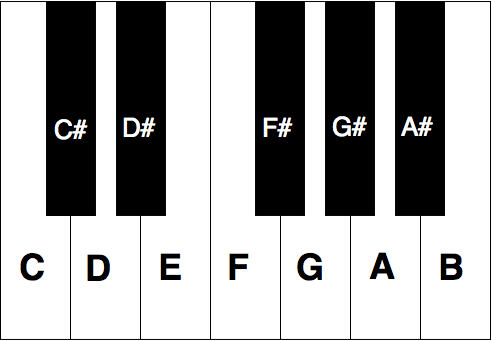

Music Theory
The basis for all music is in music theory. Every song, lick, or beat you have ever heard is based in music theory. On this page I'll teach you everything you need to know to have a basic understanding of music theory. Again if you want to learn any more on your own, then their are links to channels at the bottom that can help you out.
Notes. These are the building block for all of what you learn about music. Notes range from A all the way to G: A, B, C, D, E, F, and G. This goes from lower pitch to higher, and after a G it raises to a higher A so on and so forth. Notes can techniquely range forvever in both directions, to either very low or high notes. Because only 7 notes isn't specific enough, musicians use sharps and flats in order to create more notes. All the notes including sharps are: A, A♯, B, C, C#, D, D♯, E, F, F♯, G, G♯. An A sharp note is equal to a B flat so you can express all the sharps as flats of the next note if you want.
Here is a picture of all the notes on a keyboard: A piano is the best intstument to learn music theory on since all the notes are laid out neatly in order. On a piano you can do almost the same things as you can on a guitar, including chords and scales which you'll learn about later in the lesson.
To represent music, musicians use sheet music. This makes it easy to write songs and for people to play them by just looking at the sheet music. All the notes that could be expressed on sheet music (ignoring the sharps and flats) are on the left.
Songs are created by using notes in patterns (usually called a Melody). The notes that a song uses are usually in a key. A key is a group of notes that sound good together. The most basic key is C. In C none of the notes in the key are sharp. A basic C major scale consists of all the notes from low C to high C. You can imagine this writtin on sheet music by looking at the picture above and just at the notes from low C to high C. After the Key of C the keys start to become more complicated, and a lot of memorization of the sharp and flat notes. However an easier way to find the all the notes in a certain key would be to know how to use whole vs half steps.
A half step would be moving to the next higher note.
ex: C to C#, F to F#, E to F
Notice how moving a half step up from E goes to an F not an E#.
This is because there is no such thing as an E# or a B#.
(Refer to the first picture of the piano keys).
A whole step is moving up two half steps from the current note.
ex: C to D, F to G, D to F#
This is useful instead of just saying two half steps because of how commonly its used.
The format for all the notes in a major key using its distance from the previous note is as follows
(W for wholestep, H for halfstep): W, W, H, W, W, W, H.
If you look at the piano keys this matches the distance of the white notes from eachother.
Rember this is the formula starting from the key note (aka the Root Note), and all the other notes in the key follow using this pattern.
Throughout the rest of the website I'll refer to a notes in a key as its number in that key's order.
For example when I talk about the 1 of a key, that is the key itself, like how the 1 of an F major key is an F.
For other numbers this gets a little more complicated, but if you follow along using the pattern previously mentioned, its not to find a different note in that key.
For example the 3 of E major:
Starting at E take one wholestep to F# than a wholestep to G# then finally a halfstep to A to get the 3 of E.
Don't worry I won't make you find a specific note in any key, I'll just tell you what it is, but in order for you to understand how it's that note I gave you a process to find it yourself.
Click here to continue on to learn chords.